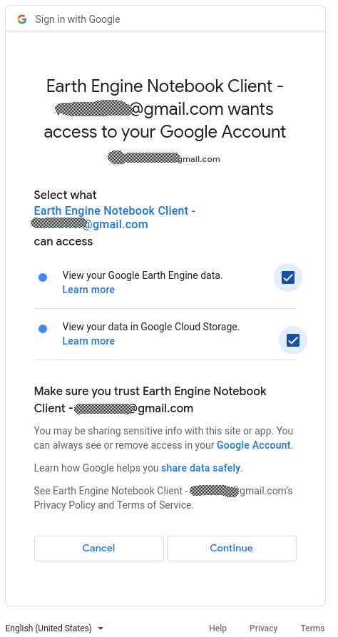

Setting up Google Earth Engine
Part I: Signing up for GEE
The Geodata Harvester utilises the Google Earth Engine API. To use this functionality, you must sign up for the service (with just your normal google account).
Click here to sign up to Google Earth Engine, follow the instructions to log in (or create a Google Account, if you do not already have one). Eventually, you will be asked to fill in a web form.
Make sure to fill in the form with genuine answers. In the section asking “What would you like to accomplish with Earth Engine?”, provide a reasonable explanation of how you would utilise the geospatial data obtained from Earth Engine in a couple of sentences. A proper description will almost guarantee that you will be approved in minutes.

Once you have submitted, you should receive a confirmation via email within minutes (to a couple of hours). This is why signing up now is important - you may not be able to use Google Earth Engine functionality if you sign up during the workshop.
Part II: Authorising your workstation with GEE
You must authorise the Geodata Harvester to use Google Earth Engine on every unique connection (usually this means once per browser, or for any new icognito/private browser windows, or on a remote platform like Jupyter Hub, or Google Colab, etc).
This can be done in several different ways. For the workshop we will cover the one method in the steps below….
Step 1: initialise
From within a notebook environment with the eeharvest module installed execute
from eeharvest import harvester
harvester.initialise(auth_mode='notebook')This will generate a url link specific for the device/browser you are on and begin the process of authorising Google Earth Engine. Navigate to the uniquely generated url.

Step 2: Sign in
Sign in to your google account (if not already signed in).
Enter your username.

Enter your password.

If you have 2-step verification enabled you may be required to verify.

Step 3: Notebook Authenticator for Google Earth Engine
Make sure you are using the correct account you want to authorise.
Make a New Project (call it anything you like, eg. ee-harvester). If you ever want to revoke access, or add more functionality you can use this Google Cloud Platform Project name.
Selecting Use read-only scopes will mean the geodata-harvester can only read data, and not write to your Google projects (this is fine, as there is no write functionality built in, yet.)
Finally, click GENERATE TOKEN to begin the access token generation process.

Step 4: Verify the GEE geodata-harvester authentication
Choose the account to use.

If you trust us, you can click “continue” here to acknowledge this is developed by a third-party.

Select what the geodata-harvester has access to, for functionality you just need the View your Google Earth Engine data selected. If you make use of storage on Google Cloud, you can select the other option too, but this is not necessary for the workshop.
Finally, click Continue.

Step 5: Get your Token!
The final page provides you with a summary of what you have done and importantly gives you the Authorization code you need to copy and paste back into your Jupyter Notebook!
Keep this token secret, this is kind of like your username/password (albeit, limited to Google Earth Engine <-> geodata-harvester usage, and easily revokeable).

Paste the token back into the Jupyter Notebook at the Enter Verification Code: prompt, press Enter, and you should be good to go!